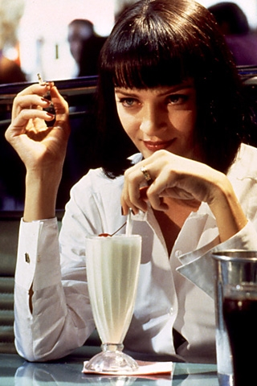

Путь праведника труден, ибо препятствуют ему себялюбивые и тираны из злых людей. Блажен тот пастырь, кто во имя милосердия и доброты ведёт слабых за собой сквозь долину тьмы. Ибо именно он и есть тот, кто воистину печётся о ближнем своём и возвращает детей заблудших. И совершу над ними великое мщение наказаниями яростными, над теми, кто замыслит отравить и повредить братьям моим. И узнаешь ты, что имя моё Господь, когда мщение моё падёт на тебя.
Ну, если ты любишь бургеры, как-нибудь непременно попробуй эти. Сам я их, обычно, не ем, потому что моя девушка — вегетарианка. Поэтому я сам почти вегетарианец. Но я очень люблю вкус добротного бургера.
— Ты тоже это ненавидишь?
— Ненавижу что?
— Неловкое молчание. Почему людям обязательно нужно сморозить какую-нибудь чушь,
лишь бы не почувствовать себя в своей тарелке?
— Не знаю. Хороший вопрос.
— Только тогда понимаешь, что нашла по-настоящему особенного человека,
когда можешь просто заткнуться на минуту и с наслаждением разделить с ним тишину...

Идут по улице три помидора: папа-помидор, мама-помидор и ребенок-помидор. Ребенок-помидор начинает отставать. Папа-помидор разозлился, подбегает к ребенку-помидору, раздавливает всмятку... и говорит: «Догоняй, кетчуп!».